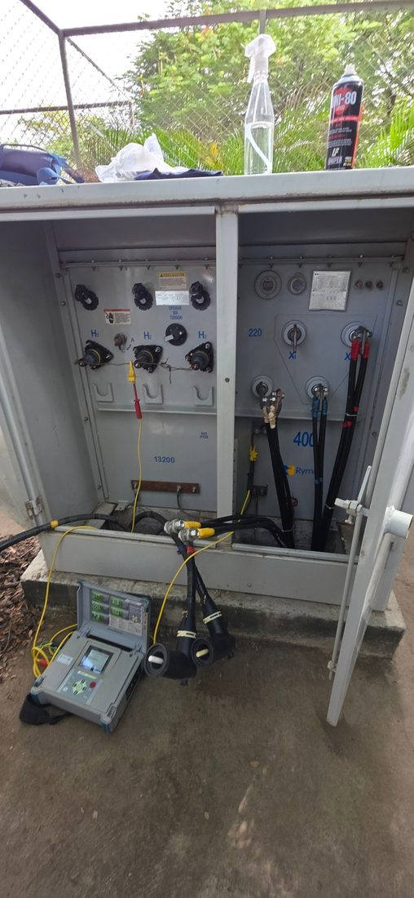
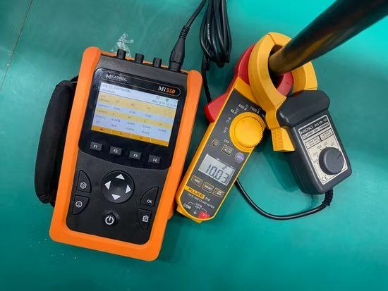
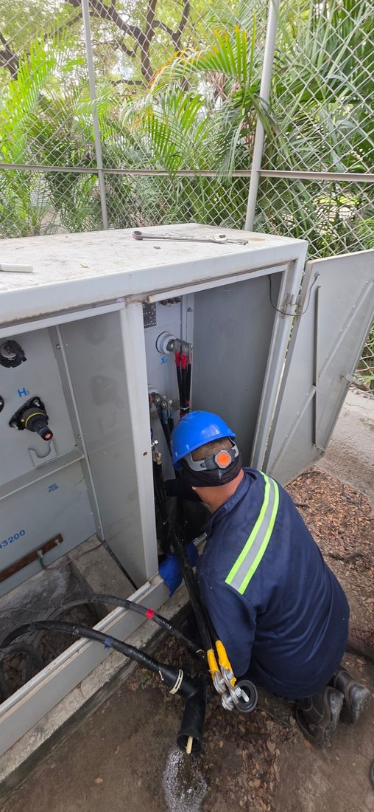
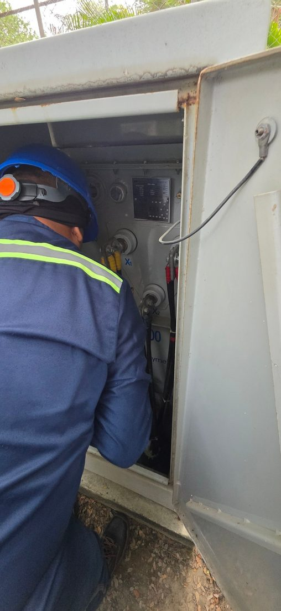
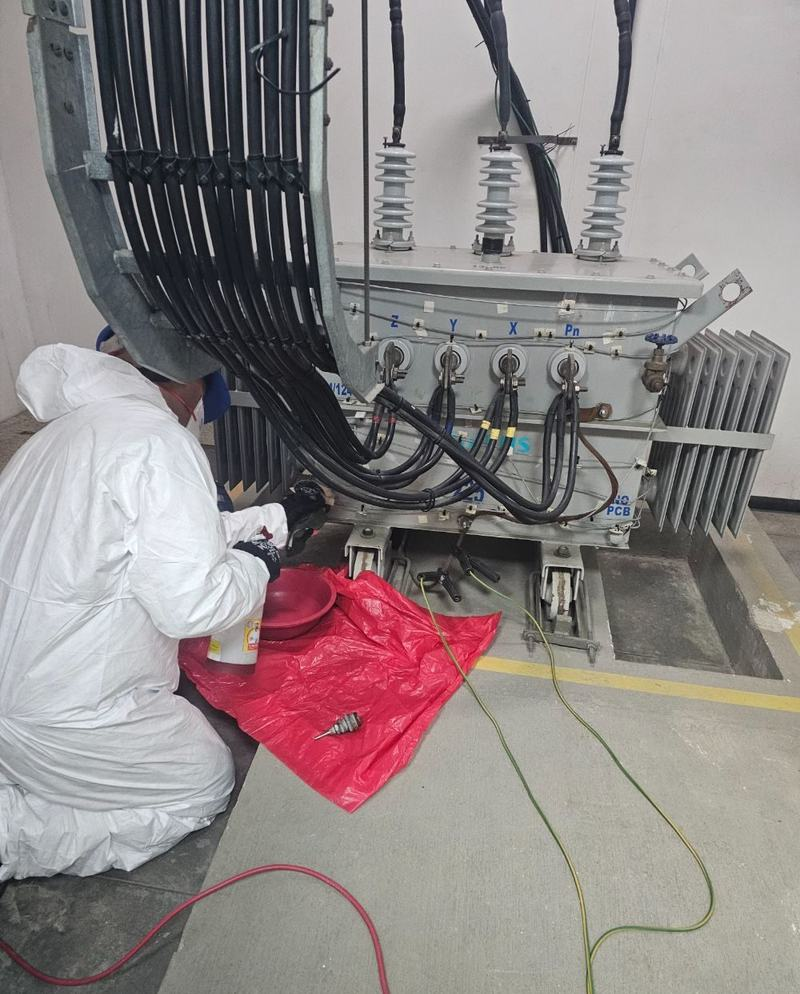
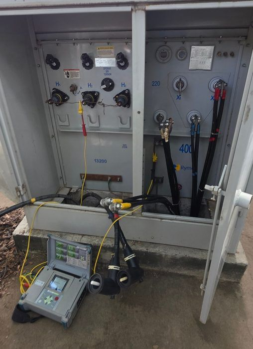
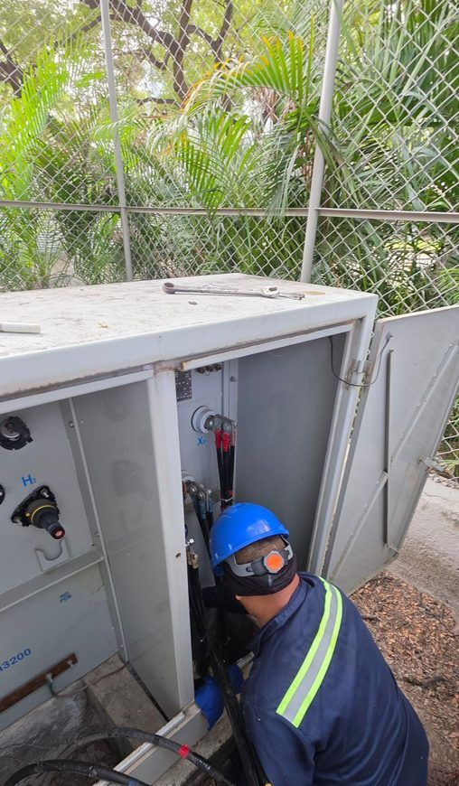

Pruebas Eléctricas Especializadas
Diagnóstico eléctrico, análisis de aceite dieléctrico, termografía industrial y medición de calidad de energía para instalaciones industriales y comerciales, con informe técnico documentado. Cobertura en Barranquilla, Atlántico y la Región Caribe.






Diagnóstico técnico objetivo, no suposiciones
Una falla intermitente o una duda sobre la seguridad de una instalación no se resuelven a simple vista. Con mediciones y pruebas especializadas entregamos evidencia objetiva para decidir qué hacer y reducir el riesgo de que un problema pequeño derive en una parada no programada.
- No saber con certeza si una instalación es segura o está en riesgo.
- Fallas intermitentes difíciles de diagnosticar a simple vista.
- Necesidad de evidencia técnica objetiva antes de invertir en una reparación.
Nuestros servicios de diagnóstico
Diagnóstico eléctrico general
Identificación de fallas y evaluación del estado de instalaciones industriales y comerciales.
Termografía industrial
Identificación de anomalías térmicas con cámara infrarroja, bajo condiciones de carga y seguridad apropiadas, sin necesidad de desenergizar la instalación. No detecta todas las fallas eléctricas.
Análisis de aceite dieléctrico
Toma de muestra en sitio con protocolo técnico y envío a laboratorio especializado.
Calidad de energía
Medición de tensión, corriente y armónicos; identificación de desbalances y caídas de tensión.
Cómo trabajamos
Diagnóstico inicial
Identificación del problema o del alcance solicitado por el cliente.
Medición en campo
Termografía, mediciones eléctricas o toma de muestra, según el caso.
Análisis
Interpretación técnica de resultados, propia o de laboratorio especializado para aceite.
Informe técnico
Hallazgos, nivel de severidad y recomendación de acción, conforme a la normativa vigente.
Trabajo de campo

Por qué hacer este diagnóstico
Ayuda a anticipar paradas no programadas
La termografía y las mediciones ayudan a identificar riesgos en desarrollo, antes de que deriven en una falla mayor.
Algunas pruebas no requieren desenergizar
La termografía se realiza con la instalación en operación bajo condiciones de seguridad apropiadas; otras pruebas, como las de aislamiento, sí requieren desenergización.
Evidencia para decidir
Resultados objetivos para decidir entre reparar, monitorear o reemplazar un equipo.
Ayuda a proteger equipos sensibles
La evaluación de calidad de energía contribuye a identificar condiciones perjudiciales para tus equipos, aunque no garantiza evitar daños.
Resolvemos tus dudas
¿Qué es la termografía industrial y para qué sirve?
Es una técnica de inspección con cámara infrarroja que permite identificar anomalías térmicas, como puntos calientes en conexiones y equipos eléctricos, bajo condiciones de carga y seguridad apropiadas, sin necesidad de desenergizar la instalación. No detecta todas las fallas eléctricas — es un complemento a otras pruebas, no un diagnóstico completo por sí sola.
¿Qué mide un análisis de aceite dieléctrico y cada cuánto se debe hacer?
Según los ensayos que se soliciten, puede medir el estado fisicoquímico del aceite de un transformador para ayudar a detectar desgaste o contaminación de forma temprana. La frecuencia recomendada depende de la edad y criticidad del transformador — te la indicamos tras la primera evaluación.
¿Qué es la calidad de la energía y por qué debería medirla?
Es la estabilidad de la tensión y corriente que llega a tus equipos. Una energía de mala calidad (armónicos, desbalances, caídas de tensión) puede dañar equipos sensibles o acortar su vida útil, incluso sin que haya un corte total del servicio. La evaluación de calidad de energía puede contribuir a identificar estas condiciones, pero no garantiza evitar daños.
¿Entregan un informe con los resultados?
Sí, cada servicio incluye un informe técnico con los hallazgos y la recomendación de acción correspondiente.
¿Puedo solicitar solo una de estas pruebas o es un paquete?
Puedes solicitar cualquiera de estas pruebas de forma independiente, según lo que necesites diagnosticar.
También puede interesarte
Mantenimiento de Subestaciones
Mantenimiento integral a subestaciones eléctricas de media tensión.
Ver detalle →Mantenimiento de Transformadores
Pruebas eléctricas y diagnóstico de transformadores secos y en aceite.
Ver detalle →Mantenimiento Eléctrico General
Vista completa de todos nuestros servicios de mantenimiento eléctrico.
Ver detalle →¿Necesitas un diagnóstico eléctrico?
Cuéntanos qué necesitas evaluar y te orientamos sin compromiso.